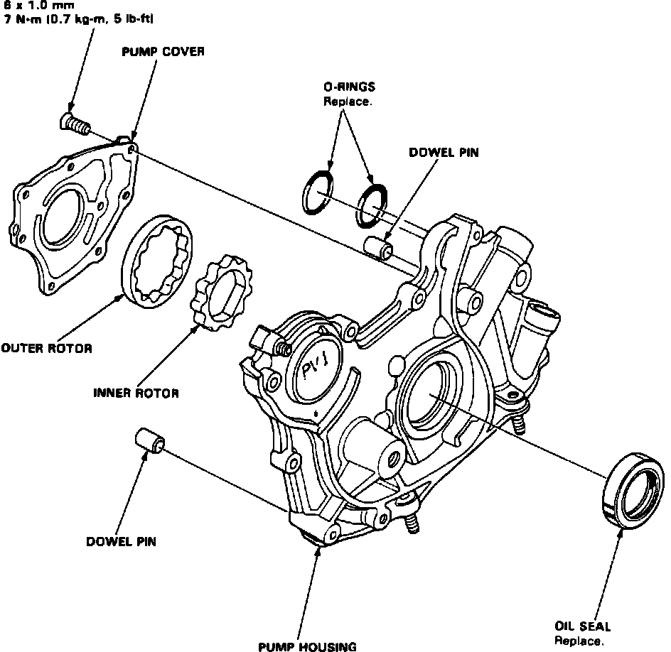
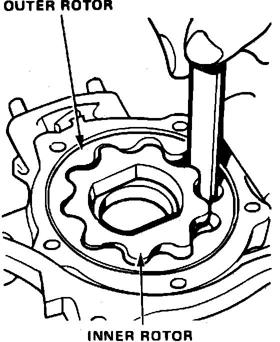
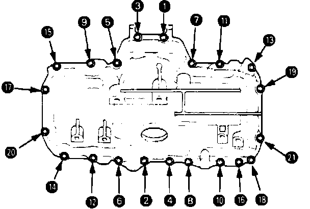

Oil Pump: Service and Repair
Removal1. Drain engine oil and differential oil into suitable container.
2. Remove timing belt as outlined under TIMING BELT.
3. Remove oil pan as follows:
a. Disable coded theft protection system as described under Accessories and Optional Equipment / Antitheft and Alarm Systems / Service and Repair.
b. Disarm airbag system as described under Air Bags and Seat Belts / Air Bags (Supplemental Restraint Systems) / Airbag System Disarming.
c. Remove radiator cap.
d. Raise and support vehicle, then remove front wheels.
e. Remove damper forks, then disconnect lower ball joint using suitable tool.
f. Remove driveshafts and air cleaner case.
g. Drain coolant.
h. Install suitable engine lifting equipment, then remove transaxle mount and mounting bracket.
i. On models equipped with auto transaxle, place shift lever in ``P'' position.
j. On models equipped with manual transaxle, place shift lever in 1st gear position.
k. On all models, remove secondary cover and 33 mm sealing bolt.
l. Using extension shaft removal tool No. 07LAPW50100 or equivalent, remove extension shaft from differential.
m. Remove underbody splash shield.
n. Remove front stopper bracket, front stopper insulator and left front engine mount bracket.
o. Remove power steering speed sensor. Do not disconnect fluid hoses.
p. Disconnect oil cooler and breather hoses, then remove differential mounting bolts and 26 mm shim.
q. Remove differential assembly and intermediate shaft.
r. Remove A/C bracket.
s. Remove set plate and oil pan inner pipe, then oil pan.
4. Remove screen and oil pump assembly.
Disassembly & Inspection
Fig. 93 Exploded View Of Oil Pump Assembly:

Fig. 85 Oil Pump Outer Rotor Radial Clearance Measurement:

1. Remove oil pump housing to cover attaching screws, then separate, Fig. 93.
2. Measure outer pump rotor radial clearance, Fig. 85. Clearance must not exceed .008 inch.
Fig. 86 Oil Pump Outer Rotor Axial Clearance Measurement:

Fig. 87 Oil Pump Housing To Rotor Clearance Measurement:

3. Measure outer pump rotor axial clearance, Fig. 86. Clearance must not exceed .005 inch.
4. Measure radial clearance between housing and outer rotor, Fig. 87. Clearance must not exceed .008 inch.
5. Inspect both rotors and pump housing for wear or damage and replace as necessary.
6. Remove oil seal from pump, then drive in new seal using a suitable tool.
Assembly & Installation
1. Assemble oil pump in the reverse order of disassembly. Apply suitable locking compound to pump housing screws prior to installation.
2. Ensure oil pump rotates freely.
3. Apply clean engine oil to seal lip, then install dowel pins and new O-ring on cylinder block.
4. Ensure mating surfaces are clean and dry, then apply suitable sealant to cylinder block mating surface.
5. Apply suitable sealant to inner threads of bolt holes and to bolt threads, then install oil pump.
6. Install screen.
Fig. 94 Oil Pan Tightening Sequence:

7. Install oil pan, tighten oil pan bolts in sequence shown, Fig. 94, to specifications. When installing A/C bracket tighten bolts on oil pan first then engine bolts.
8. Install timing belt.
9. Restore coded theft protection system and rearm airbag.